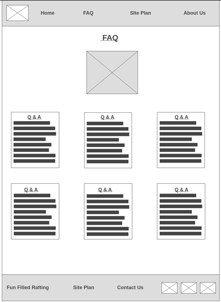

Overview
Purpose
WhiteWaterRafting is designed to provide you with the necessary whitewater rafting information you'll need in order to book a whitewater rafting trip for you and your friends.
Audience
To everyone that is healthy ranging from 7 years old and above who would want to try something new and exciting. For People who loves outdoor sporting activities and wants to try new challenges.For those who wishes to visit mountains and view nature from a different perspective. Come have fun with your spouse, kids in a unique way.
Branding
Website Logo

Style Guide
Color Palette
Pallet URL:
https://coolors.co/396e94-e7c24f-a43312-381d2a-aabd8c| Primary | Secondary | Accent 1 | Accent 2 |
|---|---|---|---|
| #59C3C3 | #CCCBE9 | #EBEBEB | #CAD2C5 |
Typography
Heading Font: Merienda
Paragraph Font: Roboto
Normal Paragraph Example
The best Whitewater Rafting in Colorado, White Water Rafting company offers rafting on the colorado and Roaring Fork Rivers in Glenwood Springs. Since 1974, we have been family owned and managed, rafting the Shoshone section of Glenwood Canyon and beyond.
Colored Paragraph Example
Trips varies from mild and great for families, to trips exclusively for physically fit and experienced rafters. No matter the type of river adventures you seek, White Water Rafting Company can make it happen for you.
Navigation
Site Map
Wireframes
Home Page Wireframe

About Us Page Wireframe
FAQ
@2024 🌴 Rafting Site Document 🌴 Nkwo Precious 🌴 WDD 130